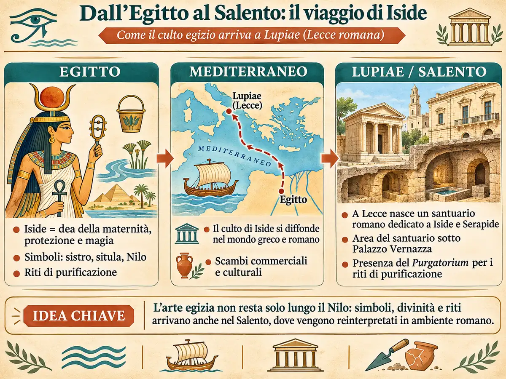
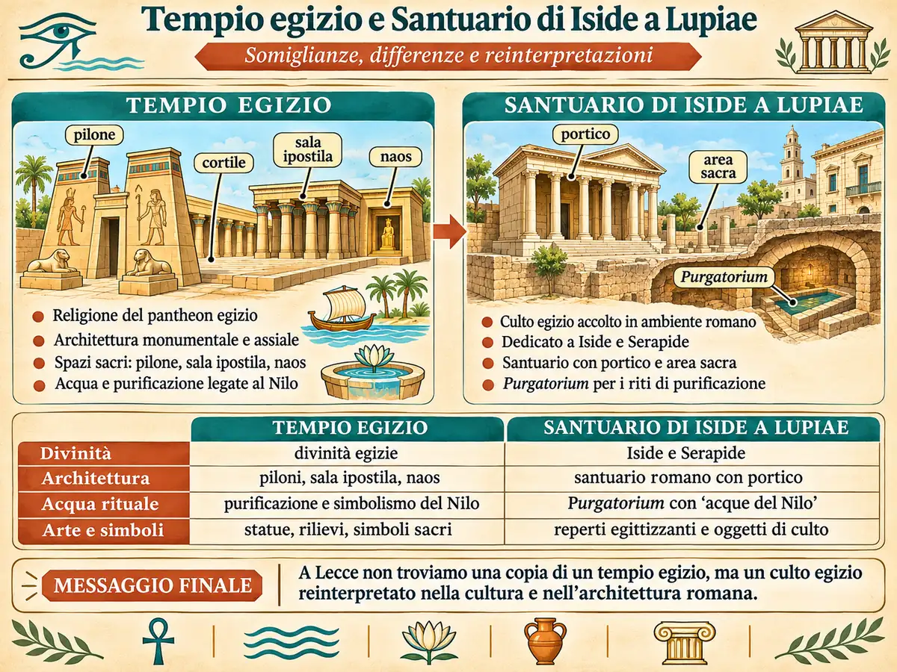
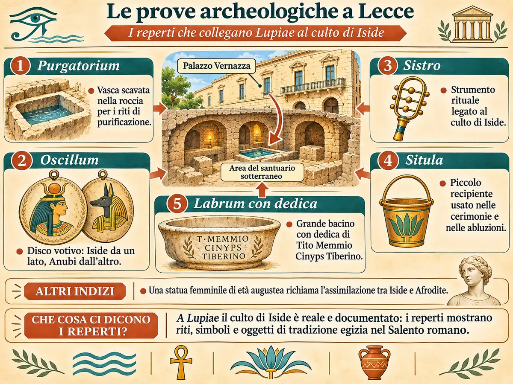

Prima tappa · Egitto
Iside, la dea del Nilo
Iside era venerata come dea della protezione, della maternità e della magia. Tra i suoi simboli compaiono il sistro e la situla.
Un viaggio nell'arte e nel territorio
Una pergamena interattiva: dall'antica civiltà del Nilo al santuario di Iside nella Lecce romana.

Come arrivò il culto di una divinità egizia nell'antica Lupiae?
Prima tappa · Egitto
Iside era venerata come dea della protezione, della maternità e della magia. Tra i suoi simboli compaiono il sistro e la situla.
Seconda tappa · Mediterraneo
I contatti commerciali e culturali diffusero il culto di Iside nel mondo greco e romano. La rotta illustrata è simbolica, non la ricostruzione di un singolo viaggio.
Terza tappa · Lecce romana
Nella Lecce romana esisteva un santuario dedicato a Iside e Serapide. I suoi resti sono stati scoperti sotto Palazzo Vernazza, nel centro storico.
Idea chiave: una tradizione religiosa egizia arriva nel Salento, ma si esprime nel contesto culturale e artistico romano.
Il santuario leccese non era una copia di un tempio egizio.
Osserva e confronta

Nel tempio egizio riconosciamo pilone, cortile, sala ipostila e naos. A Lupiae le testimonianze riguardano un santuario di età romana, il portico e una vasca rituale.
È un ambiente con una vasca scavata nella roccia, usata per i riti di purificazione. L'acqua era associata simbolicamente al Nilo: non significa che provenisse realmente dall'Egitto.
Il tempio egizio monumentale segue spesso un percorso assiale con spazi progressivamente più sacri. L'Iseo di Lupiae appartiene invece a un contesto architettonico romano. La ricostruzione mostrata è illustrativa e non una fotografia fedele dell'edificio originale.
Il culto di Iside, diversi simboli religiosi e l'importanza dell'acqua nei rituali. I Romani adottarono questi elementi, adattandoli a nuove forme artistiche e sociali.
I reperti sotto Palazzo Vernazza raccontano una storia concreta: tocca gli oggetti per scoprirla.

Una vasca scavata nella roccia, utilizzata per rituali di purificazione legati al culto isiaco.
La scoperta: il santuario, l'oscillum e i recipienti rituali dimostrano la presenza del culto egizio nella Lecce romana. I disegni sono ricostruzioni didattiche, non fotografie dei reperti.
La prova finale
Perché il santuario di Iside a Lecce è importante?